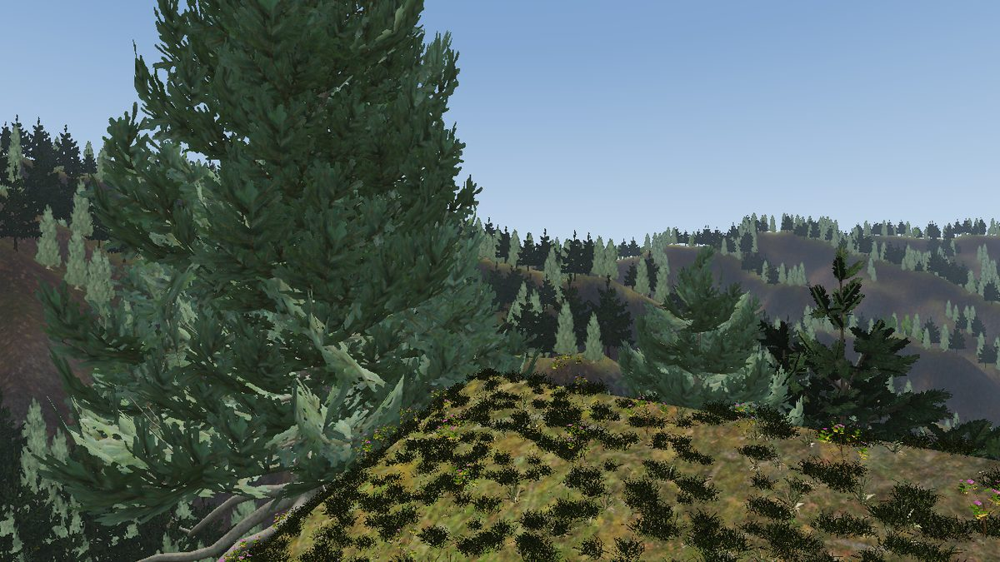

A quarter of a million trees is not a quarter of a million objects in a scenegraph. Plants are carried as tables of positions and drawn as instanced sets chosen against the view each frame: real geometry near the camera, cards beyond it, and a cross-fade between them so a tree turns into branches without a step. Ground cover is not carried at all — it is scattered on a world-anchored grid around the camera and re-chosen as that moves. Everything standing on the ground reads the same shade, so a wood is dark under its own canopy.
There are two paths, and which one a world wants depends on how big it is: a
field beside the world, or
scattered into the tiles a world streams. The code is
OpenGLContext.scenegraph.vegetation; the toolkit ships no tree art,
because art is the caller's.

A quarter of a million trees is a table of positions, one instanced draw per
species for the cards that stand for the far field, and one more for the real
geometry within a hundred metres, with both re-chosen from the table whenever the
camera moves far enough to change them.
OpenGLContext.scenegraph.vegetation.VegetationField
owns that:
from OpenGLContext.scenegraph.vegetation import TreeSpecies, VegetationField
forest = VegetationField(positions, yaws, heights,
[TreeSpecies(name='fir', mesh='fir.npz',
solid_texture='fir_bark.png',
foliage_texture='fir_branch.png',
impostor='fir_imp.png')],
species_id=kind)
forest.update(camera_position, facing=where_it_looks) # once a frameA TreeSpecies is what one kind of tree is drawn
from: a .npz of named arrays holding a solid part (trunk
and branches, opaque) and a foliage part (alpha-masked cards), a texture
for each, and the single card the tree becomes at a distance. The near mesh and
the cards cross-fade in their own shaders over a window they share, so a tree
turns from a card into branches without a step.
What is drawn far off is chosen against the view, which is
most of what a four-kilometre forest costs. Give update the
camera's view matrix and the cards are chosen against the frustum
itself; give it a facing and they are chosen in a cone about it,
which is the fallback and is the wrong shape — a camera pitched down at a
valley has the trees near it inside the cone and the ones along its own view
outside, which draws a hard edge across the forest. Give neither and they are
chosen by distance alone, which is what an orbiting view wants.
The slack outside the view grows with distance, because a frustum plane meets the ground in a straight line and a card set cut exactly at the view has a ruled edge across the forest the moment anything disagrees about where the view is. Selection is skipped altogether while the camera is nearly still.
A baked world can carry its forest this way: see Baking a world.
A wood with bare ground under it is trees standing on a lawn, and a wood
where one plant is repeated everywhere is a lawn with trees on it. The floor
of a real one is cover: grass, fern, nettle and shrub, each at its
own size and its own density, in beds and thickets with clear ground
between.
OpenGLContext.scenegraph.vegetation.GroundCover
takes a set of CoverSpecies and draws each of them through the
whole distance chain.
from OpenGLContext.scenegraph.vegetation import (
CoverSpecies, GroundCover, control_weight)
cover = GroundCover(
field,
[CoverSpecies(name='grass', card='grass_card.png', clump='grass.glb',
clump_mesh='tuft_a', clump_far_mesh='tuft_a_far',
density=11.0, height=0.15, patchiness=0.25),
CoverSpecies(name='shrub', card='shrub_card.png', clump='shrub.glb',
density=0.5, height=0.22, patchiness=0.8,
patch_metres=34.0, canopy=(0.3, 5.0))],
mask=control_weight(control_image, ['grass', 'forest_floor'],
layers, field.extent),
shade=terrain.shade, canopy=terrain.canopy_cover)
cover.update(camera_position) # once a frameEach species is drawn at three reaches, because what the eye can tell apart falls away with distance faster than the cost of drawing it does:
CLUMP_LOD_FRAC of the
disc and a decimated one over the rest. The outer ring is most of the
plants, so that is where the triangles are;None of it is baked. The ground is the same everywhere and there is far too much of it — a metre-spaced scatter over four kilometres is sixteen million instances — so each rung is scattered on a world-anchored grid around the camera and re-chosen as that moves. A cell's position and its fate are decided by the cell's own hash, so nothing shifts or appears as the disc recentres, and each species is salted onto a grid of its own so no two of them contend for the same cells.
The scatter is the expensive half and it touches no GL, so
a caller with a worker thread runs compute_near there and calls
apply_near on the render thread with what came back;
update is the same work in line. select is the
cheap per-frame half, which re-centres the drawn geometry on the live camera
— without it the disc lags the walk and the mid-distance cover pulses
in density as you go.
Where it may grow at all is decided by the ground. The
splat control map already says where
the grass and the leaf litter are, and a baked world has the road's corridor
painted out of them, so control_weight turns that map into the
mask and nothing else has to know about any of it. A control map has to be
fine enough to resolve what it is masking: over four kilometres, 512 pixels
is eight metres each and a road corridor is thinner than one of them.
Where there is no ground it does not grow at all.
holes(x, z) -> mask is the same predicate the terrain is
drawn and collided with (holes in the
ground): true where the ground is not there, over a tunnel's bore say.
A height field answers with a height inside an opening as readily as
outside one, so cover seated on that answer alone stands in the portal in
mid-air. A TilesTerrain hands its own holes to
the cover it built, so a game that tells the terrain tells the grass; set
cover.holes directly for cover built by hand. It is kept apart
from mask because the two answer different questions: the mask
says what grows on the ground there is, and an opening is not a kind of
ground a plant does badly on.
How much it gathers is the species' own.
patchiness runs from 0 — as likely here as anywhere,
which is what a grass or a small flower wants — to 1, gathered into
beds with bare ground between, and patch_metres is how far
across one bed is. The beds are a world-anchored field, so a stand of
nettles is in the same place every time you walk past it, and no two species
agree about where the beds are. Density keeps meaning plants per square
metre either way: a patchy species is scattered on a finer grid and thinned
back, rather than simply being reduced.
What it grows under is the trees. canopy is
the band of tree cover a plant grows in, read against
terrain.canopy_cover
— 0 on open ground, 1 with a crown's worth of tree over every square
metre. A band that stops short of bare ground puts shrubs where the trees
stand apart and along the edges of clearings, and keeps them out of a closed
stand; one that starts above it keeps a shade plant off the open. A plant
near the edge of its band still grows, but smaller.
The closure rather than the shade, because the shade is clamped: past a certain density more trees take no more light, so a stand with gaps in it and a closed one are equally dark and not at all equally full.
density is plants per square metre before any of that thins
it, and height how tall one is in metres — which is what a
field of them averages, not the most any of them reaches.
density_scale is the multiplier over the whole set that a
quality setting moves: a machine that cannot draw this much cover wants less
of all of it, in proportion, rather than a different set of plants.
A tuft may wander well past its own cell (COVER_JITTER): kept
inside it, the set is still a grid, and from thirty metres a grid reads as
diagonal rows of evenly spaced plants.
A CoverSpecies names a .glb and which mesh in it
is which rung, because one file holds every variant of a plant and both its
levels of detail against the single cutout texture they share — a 1k
RGBA texture is about a megabyte, and a file per rung would carry it over and
over.
oglc-bake-plants, in
OpenGLContext-editor,
bakes published scans into that shape: it fetches the model, puts back the
cutout mask that a JPEG base colour cannot carry, reduces each plant to the
two rungs' triangle budgets, renders the billboard from the geometry itself
so the two agree, and writes a cover.json naming what grew.
oglc-bake-plants --out assets --per-asset 2 --patchiness 0.25 \
grass_medium_01=11.0 grass_medium_02=4.0
oglc-bake-plants --out assets --per-asset 1 --near 3000 --far 800 \
--patchiness 0.8 --patch-metres 34 --canopy 0.3 5.0 shrub_04=0.5A baked world can carry a whole set this way: see Baking a world.
On the ground, a crown reaching over the carriageway is the point — that is the canopy closing over a forest road — so the trees are cleared only out of the corridor the road was cut through. Where the road is carried, on an embankment or a causeway's retained fill or a deck, a tree beside it is rooted metres below the surface and a crown of the same reach goes through the structure instead of over the road. The clearance is therefore the corridor where the road is on the land, and the corridor plus a crown where it stands above it. Roads is what draws the road itself.
The shade a wood casts on its own floor is baked once into the terrain rather than traced per frame: the trees do not move and neither does the sun. Give a splat terrain the trunk positions and it darkens its static shading under them.
terrain.canopy = forest.positions # (N,3) trunk bases
terrain.shading # the lit grid, in [0, 1]
terrain.shade(x, z) # ...read by world positionA tree shades the ground its crown covers, not the cell its trunk
stands in, so each one is spread over canopy_crown metres and the
total scaled so that one tree per crown-area is a closed canopy. That is what
makes the figure mean the same thing at any grid resolution and any planting
density: canopy_shade is then how hard a closed canopy darkens the
ground and canopy_deepest the most of the light it may take.
canopy_spread offsets the shadow towards the sun, because a tree
casts along the light rather than straight down.
Everything standing on that ground reads the same figure. Grass lit like an open field, on ground darkened to a fifth, is a row of lamps on the forest floor. So the instance layout every vegetation node shares carries a shade with the position, the yaw and the scale:
forest.lit_by(terrain.shade) # every tree
GroundCover(..., shade=terrain.shade) # every clump and card
cards.update_instances(points, yaws, scales, shades) # or by handIt defaults to 1 — full sun — so a caller with nothing to say
about the light says nothing. A world loaded through
TilesTerrain wires all of this itself: it is the one place that
knows both where the ground is and where the trees on it are.
The shading above is clamped — past canopy_deepest
more trees cannot take any more light. That is right for lighting and useless
for deciding what grows: a stand with gaps in it and a closed one are equally
dark, and they are not at all equally full. One has room for shrubs.
So the closure is readable on its own, unclamped — 0 on open ground, 1 with a crown's worth of tree over every square metre, and higher where the planting is denser than that:
terrain.closure # the cover grid
terrain.canopy_cover(x, z) # ...read by world position
CoverSpecies(name='shrub', ..., canopy=(0.3, 5.0)) # a band of itIt is what puts shrubs where the trees stand apart and along the edges of clearings and keeps them out of a closed stand — see where each kind grows. The figures are in crowns deep, so what counts as “sparse” depends on how densely that world was planted.
The other path scatters plants onto the surface of a streamed tile, so they page in and out with the ground they stand on rather than being carried beside the world. The scatter is deterministic, area-weighted, and filtered to sensible places (grass elevations, not water or peaks). Every instance shares one prototype so the instancing engine collapses them to a single draw. Trees use a distance LOD — a full mesh near the camera, a cheap billboard far away — and grass is a dense blade layer limited to a disc around the viewer.
from OpenGLContext.loaders.tiles3d.vegetation import (
build_vegetation_lod, build_grass_patch)
pos, nrm, col, idx = procedural.terrain_patch(-700, 700, -700, 700, 48)
trees = build_vegetation_lod(pos, idx.reshape(-1, 3), near_mesh, far_billboard,
density=0.00035, seed=7, camera=eye,
near_distance=450,
keep=lambda p: (p[:,1] > 4) & (p[:,1] < 130))scatter.py (per-triangle uniform barycentric
sampling, seeded, with a keep mask) and vegetation.py
(group_from_scatter, partition_by_distance,
build_vegetation_lod, build_grass_patch).
A placement is the point the plant stands on, and every
vegetation path in the engine agrees on it. The GPU nodes carry it in their
vertex data: a billboard quad spans y in [0, 1],
load_clump_glb rebases a clump to y = 0, and
a tree mesh is authored with its trunk foot at the origin.
A scenegraph prototype is whatever its author modelled, and VRML's primitives
are centred on their origin — so a Cone used straight as a
shrub would be planted half its height into the hill with its tip showing.
group_from_scatter gives a prototype the same contact point the GPU
nodes have, by measuring what it occupies and lifting it by its own underside.
A prototype already modelled foot-at-origin measures a zero lift and does not
move.
shrub = Shape(geometry=Cone(bottomRadius=2.5, height=8.0), appearance=green)
veg = build_vegetation_group(pos, idx.reshape(-1, 3), shrub, density=0.004, seed=1)
group_from_scatter(placements, oak, sink=0.1) # settle a root flare in
group_from_scatter(placements, buoy, seat=False) # modelled about its middlesink settles the prototype that far back into the ground, in the
units it is modelled in — what a root flare or a boulder base wants so
that it meets the ground rather than perching on it. seat=False
keeps the prototype's own origin as the contact point. The seated prototype is
wrapped once and shared by every instance, so the scatter is still one draw.
OpenGLContext.loaders.assets.seated(node, sink=0)
is the same thing for anything else placed on a surface — a prop, a rock,
a parked car — and assets.bounds(node) is the measurement
under it: the box a subtree occupies in its own root's space, with every
Transform applied and no GL context needed.
oglc-forest — the
forest demo,
a separate distribution — is this path at full size: 230k GPU-instanced
trees with impostor LOD, two layers of camera-following grass, canopy shade over
a four-layer splat ground, and the whole of it walked at eye height. It is the
deep example; tests/tiles_vegetation.py is the small one.
scenegraph/vegetation/ holds the nodes
(field.py, cover.py, clumps.py,
billboards.py, nearmesh.py, grid.py), and
the behaviour is pinned by tests/unit/test_vegetation_field.py and
tests/unit/test_terrain_vegetation.py. Instancing itself is
Instanced Geometry.